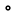
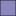

<!doctype html>
<html lang="en">
    <head>
        <meta charset="utf-8">
        <meta http-equiv="X-UA-Compatible" content="IE=edge">
        <meta name="viewport" content="initial-scale=1,user-scalable=no,maximum-scale=1,width=device-width">
        <meta name="mobile-web-app-capable" content="yes">
        <meta name="apple-mobile-web-app-capable" content="yes">
        <link rel="stylesheet" href="css/leaflet.css"><link rel="stylesheet" href="css/L.Control.Locate.min.css">
        <link rel="stylesheet" href="css/qgis2web.css"><link rel="stylesheet" href="css/fontawesome-all.min.css">
        <link rel="stylesheet" href="css/leaflet-search.css">
        <link rel="stylesheet" href="css/leaflet-control-geocoder.Geocoder.css">
        <link rel="stylesheet" href="css/leaflet-measure.css">
        <style>
        html, body, #map {
            width: 100%;
            height: 100%;
            padding: 0;
            margin: 0;
        }
        </style>
        <title>Population Density of Liberia, 2021</title>
    </head>
    <body>
        <div id="map">
        </div>
        <script src="js/qgis2web_expressions.js"></script>
        <script src="js/leaflet.js"></script><script src="js/L.Control.Locate.min.js"></script>
        <script src="js/leaflet.rotatedMarker.js"></script>
        <script src="js/leaflet.pattern.js"></script>
        <script src="js/leaflet-hash.js"></script>
        <script src="js/Autolinker.min.js"></script>
        <script src="js/rbush.min.js"></script>
        <script src="js/labelgun.min.js"></script>
        <script src="js/labels.js"></script>
        <script src="js/leaflet-control-geocoder.Geocoder.js"></script>
        <script src="js/leaflet-measure.js"></script>
        <script src="js/leaflet-search.js"></script>
        <script src="data/PopulationDensity_1.js"></script>
        <script src="data/Cities_2.js"></script>
        <script>
        var highlightLayer;
        function highlightFeature(e) {
            highlightLayer = e.target;

            if (e.target.feature.geometry.type === 'LineString') {
              highlightLayer.setStyle({
                color: '#ffff00',
              });
            } else {
              highlightLayer.setStyle({
                fillColor: '#ffff00',
                fillOpacity: 1
              });
            }
            highlightLayer.openPopup();
        }
        var map = L.map('map', {
            zoomControl:true, maxZoom:28, minZoom:1
        }).fitBounds([[4.191611828896342,-13.371480871831569],[8.604181442204705,-4.378389168583727]]);
        var hash = new L.Hash(map);
        map.attributionControl.setPrefix('<a href="https://github.com/tomchadwin/qgis2web" target="_blank">qgis2web</a> &middot; <a href="https://leafletjs.com" title="A JS library for interactive maps">Leaflet</a> &middot; <a href="https://qgis.org">QGIS</a>');
        var autolinker = new Autolinker({truncate: {length: 30, location: 'smart'}});
        L.control.locate({locateOptions: {maxZoom: 19}}).addTo(map);
        var measureControl = new L.Control.Measure({
            position: 'topleft',
            primaryLengthUnit: 'meters',
            secondaryLengthUnit: 'kilometers',
            primaryAreaUnit: 'sqmeters',
            secondaryAreaUnit: 'hectares'
        });
        measureControl.addTo(map);
        document.getElementsByClassName('leaflet-control-measure-toggle')[0]
        .innerHTML = '';
        document.getElementsByClassName('leaflet-control-measure-toggle')[0]
        .className += ' fas fa-ruler';
        var bounds_group = new L.featureGroup([]);
        function setBounds() {
        }
        map.createPane('pane_OpenStreetMap_0');
        map.getPane('pane_OpenStreetMap_0').style.zIndex = 400;
        var layer_OpenStreetMap_0 = L.tileLayer('https://tile.openstreetmap.org/{z}/{x}/{y}.png', {
            pane: 'pane_OpenStreetMap_0',
            opacity: 1.0,
            attribution: '',
            minZoom: 1,
            maxZoom: 28,
            minNativeZoom: 0,
            maxNativeZoom: 19
        });
        layer_OpenStreetMap_0;
        map.addLayer(layer_OpenStreetMap_0);
        function pop_PopulationDensity_1(feature, layer) {
            layer.on({
                mouseout: function(e) {
                    for (i in e.target._eventParents) {
                        e.target._eventParents[i].resetStyle(e.target);
                    }
                    if (typeof layer.closePopup == 'function') {
                        layer.closePopup();
                    } else {
                        layer.eachLayer(function(feature){
                            feature.closePopup()
                        });
                    }
                },
                mouseover: highlightFeature,
            });
            var popupContent = '<table>\
                    <tr>\
                        <th scope="row">I.D</th>\
                        <td>' + (feature.properties['ID_1'] !== null ? autolinker.link(feature.properties['ID_1'].toLocaleString()) : '') + '</td>\
                    </tr>\
                    <tr>\
                        <th scope="row">County</th>\
                        <td>' + (feature.properties['NAME_1'] !== null ? autolinker.link(feature.properties['NAME_1'].toLocaleString()) : '') + '</td>\
                    </tr>\
                    <tr>\
                        <th scope="row">Pop.</th>\
                        <td>' + (feature.properties['Population'] !== null ? autolinker.link(feature.properties['Population'].toLocaleString()) : '') + '</td>\
                    </tr>\
                    <tr>\
                        <th scope="row">Area</th>\
                        <td>' + (feature.properties['Area (km)'] !== null ? autolinker.link(feature.properties['Area (km)'].toLocaleString()) : '') + '</td>\
                    </tr>\
                    <tr>\
                        <th scope="row">Districts</th>\
                        <td>' + (feature.properties['Number of'] !== null ? autolinker.link(feature.properties['Number of'].toLocaleString()) : '') + '</td>\
                    </tr>\
                    <tr>\
                        <th scope="row">Date Created</th>\
                        <td>' + (feature.properties['Date Creat'] !== null ? autolinker.link(feature.properties['Date Creat'].toLocaleString()) : '') + '</td>\
                    </tr>\
                    <tr>\
                        <th scope="row">Pop. Density</th>\
                        <td>' + (feature.properties['Pop_Densit'] !== null ? autolinker.link(feature.properties['Pop_Densit'].toLocaleString()) : '') + '</td>\
                    </tr>\
                </table>';
            layer.bindPopup(popupContent, {maxHeight: 400});
        }

        function style_PopulationDensity_1_0(feature) {
            if (feature.properties['Pop_Densit'] >= 8.645000 && feature.properties['Pop_Densit'] <= 10.351000 ) {
                return {
                pane: 'pane_PopulationDensity_1',
                opacity: 1,
                color: 'rgba(35,35,35,1.0)',
                dashArray: '',
                lineCap: 'butt',
                lineJoin: 'miter',
                weight: 1.0, 
                fill: true,
                fillOpacity: 1,
                fillColor: 'rgba(252,251,253,1.0)',
                interactive: true,
            }
            }
            if (feature.properties['Pop_Densit'] >= 10.351000 && feature.properties['Pop_Densit'] <= 14.661000 ) {
                return {
                pane: 'pane_PopulationDensity_1',
                opacity: 1,
                color: 'rgba(35,35,35,1.0)',
                dashArray: '',
                lineCap: 'butt',
                lineJoin: 'miter',
                weight: 1.0, 
                fill: true,
                fillOpacity: 1,
                fillColor: 'rgba(228,227,240,1.0)',
                interactive: true,
            }
            }
            if (feature.properties['Pop_Densit'] >= 14.661000 && feature.properties['Pop_Densit'] <= 28.332000 ) {
                return {
                pane: 'pane_PopulationDensity_1',
                opacity: 1,
                color: 'rgba(35,35,35,1.0)',
                dashArray: '',
                lineCap: 'butt',
                lineJoin: 'miter',
                weight: 1.0, 
                fill: true,
                fillOpacity: 1,
                fillColor: 'rgba(186,187,219,1.0)',
                interactive: true,
            }
            }
            if (feature.properties['Pop_Densit'] >= 28.332000 && feature.properties['Pop_Densit'] <= 42.243000 ) {
                return {
                pane: 'pane_PopulationDensity_1',
                opacity: 1,
                color: 'rgba(35,35,35,1.0)',
                dashArray: '',
                lineCap: 'butt',
                lineJoin: 'miter',
                weight: 1.0, 
                fill: true,
                fillOpacity: 1,
                fillColor: 'rgba(140,136,192,1.0)',
                interactive: true,
            }
            }
            if (feature.properties['Pop_Densit'] >= 42.243000 && feature.properties['Pop_Densit'] <= 76.334000 ) {
                return {
                pane: 'pane_PopulationDensity_1',
                opacity: 1,
                color: 'rgba(35,35,35,1.0)',
                dashArray: '',
                lineCap: 'butt',
                lineJoin: 'miter',
                weight: 1.0, 
                fill: true,
                fillOpacity: 1,
                fillColor: 'rgba(99,67,156,1.0)',
                interactive: true,
            }
            }
            if (feature.properties['Pop_Densit'] >= 76.334000 && feature.properties['Pop_Densit'] <= 599.689000 ) {
                return {
                pane: 'pane_PopulationDensity_1',
                opacity: 1,
                color: 'rgba(35,35,35,1.0)',
                dashArray: '',
                lineCap: 'butt',
                lineJoin: 'miter',
                weight: 1.0, 
                fill: true,
                fillOpacity: 1,
                fillColor: 'rgba(63,0,125,1.0)',
                interactive: true,
            }
            }
        }
        map.createPane('pane_PopulationDensity_1');
        map.getPane('pane_PopulationDensity_1').style.zIndex = 401;
        map.getPane('pane_PopulationDensity_1').style['mix-blend-mode'] = 'normal';
        var layer_PopulationDensity_1 = new L.geoJson(json_PopulationDensity_1, {
            attribution: '',
            interactive: true,
            dataVar: 'json_PopulationDensity_1',
            layerName: 'layer_PopulationDensity_1',
            pane: 'pane_PopulationDensity_1',
            onEachFeature: pop_PopulationDensity_1,
            style: style_PopulationDensity_1_0,
        });
        bounds_group.addLayer(layer_PopulationDensity_1);
        map.addLayer(layer_PopulationDensity_1);
        function pop_Cities_2(feature, layer) {
            layer.on({
                mouseout: function(e) {
                    for (i in e.target._eventParents) {
                        e.target._eventParents[i].resetStyle(e.target);
                    }
                    if (typeof layer.closePopup == 'function') {
                        layer.closePopup();
                    } else {
                        layer.eachLayer(function(feature){
                            feature.closePopup()
                        });
                    }
                },
                mouseover: highlightFeature,
            });
            var popupContent = '<table>\
                    <tr>\
                        <th scope="row">City</th>\
                        <td>' + (feature.properties['name'] !== null ? autolinker.link(feature.properties['name'].toLocaleString()) : '') + '</td>\
                    </tr>\
                    <tr>\
                        <th scope="row">Pop.</th>\
                        <td>' + (feature.properties['population'] !== null ? autolinker.link(feature.properties['population'].toLocaleString()) : '') + '</td>\
                    </tr>\
                </table>';
            layer.bindPopup(popupContent, {maxHeight: 400});
        }

        function style_Cities_2_0() {
            return {
                pane: 'pane_Cities_2',
                radius: 1.9999999999999973,
                opacity: 1,
                color: 'rgba(0,0,0,1.0)',
                dashArray: '',
                lineCap: 'butt',
                lineJoin: 'miter',
                weight: 2.0,
                fill: true,
                fillOpacity: 1,
                fillColor: 'rgba(255,255,255,1.0)',
                interactive: true,
            }
        }
        map.createPane('pane_Cities_2');
        map.getPane('pane_Cities_2').style.zIndex = 402;
        map.getPane('pane_Cities_2').style['mix-blend-mode'] = 'normal';
        var layer_Cities_2 = new L.geoJson(json_Cities_2, {
            attribution: '',
            interactive: true,
            dataVar: 'json_Cities_2',
            layerName: 'layer_Cities_2',
            pane: 'pane_Cities_2',
            onEachFeature: pop_Cities_2,
            pointToLayer: function (feature, latlng) {
                var context = {
                    feature: feature,
                    variables: {}
                };
                return L.circleMarker(latlng, style_Cities_2_0(feature));
            },
        });
        bounds_group.addLayer(layer_Cities_2);
        map.addLayer(layer_Cities_2);
            var title = new L.Control();
            title.onAdd = function (map) {
                this._div = L.DomUtil.create('div', 'info');
                this.update();
                return this._div;
            };
            title.update = function () {
                this._div.innerHTML = '<h2>Population Density of Liberia, 2021</h2>';
            };
            title.addTo(map);
        var osmGeocoder = new L.Control.Geocoder({
            collapsed: true,
            position: 'topleft',
            text: 'Search',
            title: 'Testing'
        }).addTo(map);
        document.getElementsByClassName('leaflet-control-geocoder-icon')[0]
        .className += ' fa fa-search';
        document.getElementsByClassName('leaflet-control-geocoder-icon')[0]
        .title += 'Search for a place';
        var baseMaps = {};
        L.control.layers(baseMaps,{' Cities': layer_Cities_2,'Population Density<br /><table><tr><td style="text-align: center;"></td><td>8.6 - 10.4</td></tr><tr><td style="text-align: center;"></td><td>10.4 - 14.7</td></tr><tr><td style="text-align: center;"></td><td>14.7 - 28.3</td></tr><tr><td style="text-align: center;"></td><td>28.3 - 42.2</td></tr><tr><td style="text-align: center;"></td><td>42.2 - 76.3</td></tr><tr><td style="text-align: center;"></td><td>76.3 - 599.7</td></tr></table>': layer_PopulationDensity_1,"OpenStreetMap": layer_OpenStreetMap_0,}).addTo(map);
        setBounds();
        var i = 0;
        layer_PopulationDensity_1.eachLayer(function(layer) {
            var context = {
                feature: layer.feature,
                variables: {}
            };
            layer.bindTooltip((layer.feature.properties['Pop_Densit'] !== null?String('<div style="color: #000000; font-size: 10pt; font-family: \'Arial\', sans-serif;">' + layer.feature.properties['Pop_Densit']) + '</div>':''), {permanent: true, offset: [-0, -16], className: 'css_PopulationDensity_1'});
            labels.push(layer);
            totalMarkers += 1;
              layer.added = true;
              addLabel(layer, i);
              i++;
        });
        var i = 0;
        layer_Cities_2.eachLayer(function(layer) {
            var context = {
                feature: layer.feature,
                variables: {}
            };
            layer.bindTooltip((layer.feature.properties['name'] !== null?String('<div style="color: #000000; font-size: 10pt; font-family: \'MS Shell Dlg 2\', sans-serif;">' + layer.feature.properties['name']) + '</div>':''), {permanent: true, offset: [-0, -16], className: 'css_Cities_2'});
            labels.push(layer);
            totalMarkers += 1;
              layer.added = true;
              addLabel(layer, i);
              i++;
        });
        map.addControl(new L.Control.Search({
            layer: layer_PopulationDensity_1,
            initial: false,
            hideMarkerOnCollapse: true,
            propertyName: 'NAME_1'}));
        document.getElementsByClassName('search-button')[0].className +=
         ' fa fa-binoculars';
        resetLabels([layer_PopulationDensity_1,layer_Cities_2]);
        map.on("zoomend", function(){
            resetLabels([layer_PopulationDensity_1,layer_Cities_2]);
        });
        map.on("layeradd", function(){
            resetLabels([layer_PopulationDensity_1,layer_Cities_2]);
        });
        map.on("layerremove", function(){
            resetLabels([layer_PopulationDensity_1,layer_Cities_2]);
        });
        </script>
    </body>
</html>
